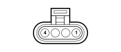

K017 LAMBDA SENSOR ON CATALYZER (ENGINE)
- Path
- Electrical equipment > 3 CONNECTORS > K SENSORS AND SENDER UNITS > K017 LAMBDA SENSOR ON CATALYZER > K017 LAMBDA SENSOR ON CATALYZER (ENGINE)
- Kind
- connector pinout (pin -> wire colour -> other end)
- Applies to
- engines: 1.2 8v; all production periods; only with equipment: Smart gearbox
- Interactive page
- https://sloeber94.github.io/elrnDB-fPnd/en/#/169003269
Applies to: engines: 1.2 8v; all production periods; only with equipment: Smart gearbox

Wiring | Colour |
|---|---|
NERO (black) |
Pin | Cable | Destination | |||
|---|---|---|---|---|---|
Sec.. | Colour | Node | Connect. | Pin | |
1 | 0,5 | L (blue) | 43 | ||
2 | 0,5 | LN (blue with black stripe) | 60 | ||
3 | 0,75 | MN (brown with black stripe) | 32 | ||
4 | 0,75 | MB (brown with white stripe) | X | 4 | |
A | |||||
2 | |||||